The properties of water confined inside nanotubes are of considerable scientific and technological interest. We use molecular dynamics to investigate the structure and average orientation of water flowing within a carbon nanotube. We find that water exhibits biaxial paranematic liquid crystal ordering both within the nanotube and close to its ends. This preferred molecular ordering is enhanced when an axial electric field is applied, affecting the water flow rate through the nanotube. A spatially patterned electric field can minimize nanotube entrance effects and significantly increase the flow rate.
Recent advances in materials science have meant that the study of water within carbon nanotubes (CNTs) is now an important research topic. In particular, computational and experimental studies of water flow inside aligned CNT membranes have shown the potential for creating filtration membranes with very promising capabilities.
Very narrow CNTs, of approximately 0.8 nm diameter, have attracted particularly strong interest as they resemble biological water channels such as aquaporins, proton pumps and protein cavities in lysozyme or Alzheimer’s Aβ amyloids. The filling process, and the structure and orientation of water inside this type of nanotube, have therefore been studied extensively, both with and without the presence of electric fields. In these narrow channels, the simple one-dimensional chain of water molecules can be represented as a hydrogen bonding network, and the molecular orientation can be described by the average water dipole moment.
However, in this paper we focus on wider nanotubes, with a diameter of approximately 2.0 nm, where up to six water molecules can be accommodated across the diameter. In such systems, a relatively high-density, structured fluid layer is formed close to the CNT walls, while towards the centre of the tube the fluid exhibits bulk behaviour. The near-wall layer seems to be the key to the high flow rates observed in previous studies, as water can easily slip over the regular uniform solid surface with minimal friction losses. These wider nanotubes resemble other important biological channels, such as the protein cavity inside tetrabrachion, ion channels and orifices created by membrane electroporation.
Using molecular dynamics (MD), we simulate the behaviour and properties of water under this type of nano-confinement. Our characterization of the water is extended beyond the usual dipole moment, and we introduce a new measurement method that uses two order tensors Q and B, often used in the theory of liquid crystal ordering. This method enables a fuller description of a system of biaxial molecules such as water. In §2, these order tensors are defined along with details of how they are constructed and the useful information they provide to complement existing measurement methods.
In §4, we use these order tensors to elucidate the effect of static electric fields on the average orientation and packing of water inside aligned CNT membranes. We observe that a rise in anisotropy is correlated to the flow rate of the water through a nanotube. We also demonstrate that the application of an external electric field close to the entrance of the membrane preorders water molecules before they enter the CNT, significantly reducing entrance losses and consequently increasing the flow rate through the nanotube membrane for the same applied pressure difference. On the other hand, applying the same fields over the entire nanotube system increases the frictional and exit losses, balancing the gains from reduced entrance losses and, therefore, leading to little or no increase in the flow rate. Finally, when the same fields are applied over the nanotube only, the flow rate decreases relative to the case with no electric field, and the flow rate reduction is independent of the field strength.
2. Water, liquid crystals and order tensors
The liquid crystal phases of matter have properties that lie between the crystalline solid and isotropic liquid states. For instance, the calamitic nematic liquid crystal phase consists of elongated molecules with no positional order (as in an isotropic liquid) but which, on average, point in one direction (as in a typical crystal structure). This nematic phase can have two sub-phases: the uniaxial phase (the simplest and most commonly observed) and the more recently discovered, and still disputed, biaxial phase [14–16]. In the uniaxial nematic phase, the molecules can be thought of as, at least on average, elongated rods that tend to align along a single direction, termed the ‘director’ and denoted by a unit vector n, which forms an axis of complete rotational symmetry. In the biaxial nematic phase, the molecules order so that there is no axis of complete rotational symmetry, and an orthogonal triad of directors n, l and m must be specified to describe the local average molecular configuration. If there are no external forces, the orientational symmetry group of the phase is a subset of the orientational symmetry group of the constituent molecule. So uniaxial molecules (i.e. a linear arrangement of atoms) must form a uniaxial nematic phase, if a liquid crystal phase is formed at all.
It might be expected that a biaxial phase is more likely to be formed by biaxial molecules and, to date, all reported observations of biaxial phases are derived from biaxial molecules [14]. However, as a 50-year search for a biaxial phase has demonstrated, not all biaxial molecules form biaxial phases. In comparison to bulk biaxiality, localized biaxiality is relatively easy to induce through the application of external forces such as electric fields, or through confinement and proximity to surfaces that reduce the inherent symmetry of the bulk. In the case of induced biaxiality, it is possible for both uniaxial and biaxial molecules to exhibit biaxial ordering. A water molecule is molecularly biaxial, i.e. the molecular orientation must be defined by an orthogonal set of molecular directions. It is perhaps the simplest biaxial molecule that naturally occurs, so a biaxial ordering might be expected to be possible.
In previous studies, the structure and average orientation of water close to solid surfaces or inside CNTs have usually been presented in terms of the density, radial distributions, hydrogen bonding, dipole moments, entropy, enthalpy and free energy. These measures provide an adequate description of the spatial structuring of the water, and the presence and position of layers. The angle between the direction lm (the dipole moment vector) and an axis (such as the flow direction or an electric field direction) defines the dipole moment, the distribution of which can provide an average orientation and a measure of directional ordering. In addition, ordering of confined water in CNTs has been described in the past in terms of entropy, where decreased rotational entropy highlighted the increased ordering of water.
However, for a more complete description of the ordering of biaxial molecules, three orthogonal molecular directions nm, lm and mm must be defined, such as those for the water molecule shown in figure 1. The direction nm corresponds, by convention in the liquid crystal field, to the molecular long axis; lm is along the molecular short axis (which coincides with the molecular dipole direction); and mm is orthogonal to nm and lm (i.e. mm=nm×lm). With these directions, the symmetric, traceless, second-rank tensors can be constructed:
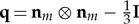
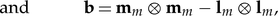
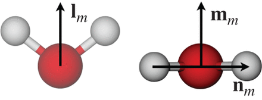
The average orientation of an ensemble of these biaxial molecules can then be represented by the two order tensors Q and B, which are averages of their microscopic counterparts q and b. We consider both the radial (measured from the nanotube axis) and axial (along the nanotube axis) dependence of the order tensors, i.e. Q(r) and Q(z) (we find no statistically significant dependence of the order tensors on the polar angle θ). Ensemble averages are constructed over bins in the streamwise (axial) direction or the radial direction from
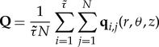
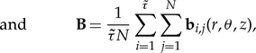
where N is the number of water molecules inside the axial or radial bin and Embedded Image is the number of MD time steps over which the system is sampled. When the water density ρ is small, the statistics of Q and B will be unreliable, so only measurements for ρ>100 kg m−3 are considered here. We will show that these order tensors provide information beyond a standard dipole moment calculation, the information for which is in fact contained within one of the eigenvalue/eigenvector pairs of the tensor B.
The measured values of Q and B are interpreted through an investigation of their eigenvalues and eigenvectors. The tensors are symmetric and traceless so that two of the total three eigenvalues are independent, and the set of eigenvectors forms an orthogonal triad, for each tensor. It is the eigenvectors that describe the principal axes of the averaged molecular axes, and the eigenvalues measure the spread of molecular deviation from the eigenvector: Q provides information about the long molecular axis, and B describes the effects of molecular biaxiality on the ensemble average properties. Both tensors are zero in the isotropic phase (i.e. bulk water), but any loss of isotropy will lead to non-zero eigenvalues and a sensitivity to the direction of the average orientation of the molecular directions.
If the molecular direction nm forms a uniaxial arrangement then Q will have two equal eigenvalues and a third distinct one; similarly for B. In uniaxial cases, the eigenvector corresponding to the distinct eigenvalue indicates the orientation of the director, revealing a radial, angular or axial uniaxial nematic phase. If the distinct eigenvalue is negative then the molecular axis is, on average, oriented randomly in a plane with a director oriented orthogonal to this plane.
On the other hand, biaxiality is present if all three eigenvalues of either Q or B are different, with the former case indicating that the molecular direction nm has a biaxial configuration and the latter case revealing a biaxial nematic phase due to the molecular shape. As the bulk phase of water is isotropic, if there is any form of anisotropic order, uniaxial or biaxial, it has been induced by the confining CNT or an applied electric field, or both. Such a situation is termed ‘paranematic ordering’.
Convenient, and commonly used, measures of the presence of anisotropy and biaxiality are through the parameters:
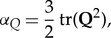
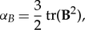
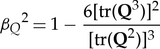
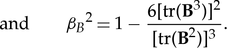
Non-zero values of αQ or αB indicate the presence of anisotropic ordering, while non-zero values of βQ2 or βB2 indicate that a biaxial paranematic state has been induced. The singularity present in βQ2 and βB2 as the system becomes isotropic (i.e. where Q=0, B=0) is avoided by only performing the biaxiality calculation when the αQ,B values are sufficiently different from zero (in this paper it is insisted that αQ,B>0.02). The anisotropy and biaxiality parameters vary in the intervals [−0.5,1] and [0,1], respectively, with αQ,B=0 and αQ,B=1 corresponding to isotropy and perfect alignment, respectively, and βQ,B2=0 and βQ,B2=1 corresponding to uniaxial and maximally biaxial states, respectively.
3. Simulation method
We carry out MD simulations of water flow through CNT membranes with an applied pressure drop and three different applied electric fields, as illustrated in figure 2. In all our cases, we simulate a 12.5 nm long rigid CNT (which is a semiconductor) that connects two water reservoirs at the ends. Two rigid graphene sheets of dimensions 10.5×10.2 nm, and each with a pore equal to the CNT diameter, are placed at each end of the tube to act as separating membrane walls. The chosen CNT in this study is of diameter D=2.034 nm, chirality (15,14) and 0.142 nm carbon–carbon bond length. The CNT is long enough to produce a fully developed water flow inside it within a reasonable simulation time.
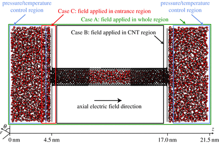 Characteristic snapshot of the simulated CNT flow system. In the blue boxed areas, temperature and pressure are controlled in order to maintain a constant temperature of 278 K and create a 100 MPa pressure difference between the water reservoirs. When an axial electric field is present it is applied across: the whole system, green box from z=0 nm to z=21.5 nm (Case A); the CNT region alone, black box from z= 4.7 nm to z=16.7 nm (Case B); or only the entrance region, red box from z=3.2 nm to z=4.7 nm (Case C). Measurements of properties are taken between z=5.7 nm and z=15.8 nm. (Online version in colour.)
Our MD simulations are performed using the mdFOAM solver [25,26], which has been developed within the open source OpenFOAM software (CFD Direct Ltd). This has been used previously to investigate various other micro/nano flow problems, including flows of water through CNTs. All molecules in a MD simulation evolve in time t and space r=(x,y,z) according to Newton’s equations of motion:
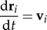
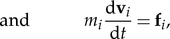
where i=(1,2,…,N) is the index of a molecule in a system of N molecules, and mi, ri, vi, fi are the molecule’s mass, position, velocity and total experienced force, respectively. The total force on a molecule is computed from a sum of pair intermolecular forces with neighbouring molecules by
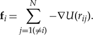
The pairwise potential U(rij) contains a Lennard-Jones (LJ) potential and Coulomb interactions for charged sites, as indicated by the first and second terms on the right-hand side of the following equation:
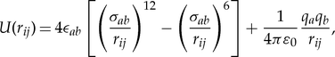
where rij=|ri−rj| is the separation of two arbitrary atomic sites (i,j) of species (a,b), σab and ϵab are the LJ characteristic diameter and well depth, respectively, qa is the electric charge of site a, and ε0 is the permittivity of vacuum.
Equations (3.1) and (3.2) are integrated numerically using the Verlet algorithm with a discretized time step Δt=2 fs, while the pair force calculation step in equation is computationally optimized by using double-loop savings, a cut-off distance rcut, and the cell-list algorithm. Both LJ and Coulomb interactions are truncated at a cut-off radius of rcut=1.0 nm, while the Coulomb interactions are also shifted.
We use the TIP4P/2005 water model, which consists of four atomic sites: one oxygen O, two hydrogen H, each with charge qH=0.5564e, and one massless M located 0.1546 Åin the direction of lm (figure 1) with charge qH=−1.1128e. The oxygen sites have zero charge and as a consequence they only interact through the LJ potential, with the parameters σOO=3.1589 Å and ϵOO=1.2868×10−21 J.
[...]
Konstantinos Ritos, Matthew K. Borg, Nigel J. Mottram, Jason M. Reese Published 28 December 2015.DOI: 10.1098/rsta.2015.0025